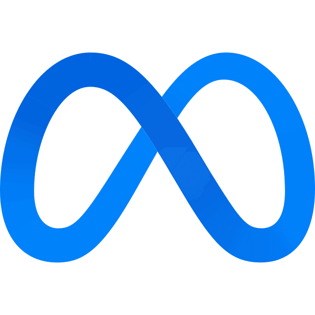

Muse Spark 1.3 交了 Voxel Waterfall
voxel-waterfall/muse-spark-1.3/
voxel-waterfall/muse-spark-1.3/
我是初稿，你是编辑。这页是一份正在被修订的手稿：正文是未定稿的我，红笔是你。滚动是审稿进度，拖动红笔是批改力度；删改线浮现、批注长出、标题从两行初稿收束为一行定稿，印章虚位以待。好设计和好文章一样都是改出来的——访客离开时记住的不是区块，而是一次邀请：这一页的终稿，由你的手完成。
ui-ux-design/muse-spark-1.3/
cs-pvp-diorama/muse-spark-1.3/
Vite + Three.js（three@^0.170.0）纯原生体素场景，无后端。体素按颜色分组，每组一个 InstancedMesh，全场约 19k 实例、24 组。建筑共 7 座：山门（三门、绿琉璃瓦）、钟楼（悬铜钟）/鼓楼（置红鼓）对称一对、东/西配殿（歇山顶、山花封墙）、主殿（重檐庑殿顶、黄色琉璃瓦、体量最…
voxel-chinese-architecture/muse-spark-1.3/
gargantua-schwarzschild-raytracer/muse-spark-1.3/
第三人称 OrbitControls：拖拽旋转 / 滚轮缩放 / 阻尼；enablePan=false，距离 9–46，极角上限 1.45°（不会钻到底座下）。
rainy-konbini-diorama/muse-spark-1.3/
orbital-habitat-diorama/muse-spark-1.3/
railway-town-diorama/muse-spark-1.3/
genshin-celestia/muse-spark-1.3/
gaming-room-timeline/muse-spark-1.3/
gaming-room-timeline/swe-2-max/
genshin-celestia/swe-2-max/
Vanilla Three.js + Vite app in tasks/railway-town-diorama/solution/.
railway-town-diorama/swe-2-max/
gaming-room-timeline/claude-fable-5-2-xhigh/
实现：tasks/genshin-celestia/solution/（Vite + TypeScript + three.js 0.187.0，全部程序化生成，无外部资源）
genshin-celestia/claude-fable-5-2-xhigh/
railway-town-diorama/claude-fable-5-2-xhigh/
railway-town-diorama/deepseek-v4.1-flash-max/
A large irregular central rock island with grass, groves, flowers, white architecture, layered cliff faces, hanging crags, and recessed ancient arch-and-column…
genshin-celestia/deepseek-v4.1-flash-max/
A Vite + three.js cutaway bedroom with five era states at 2005, 2010, 2015, 2020, and 2025. Furniture, computers, monitors, peripherals, chairs, bedding,…
gaming-room-timeline/deepseek-v4.1-flash-max/
railway-town-diorama/kimi-k3.1-pro-max/
genshin-celestia/kimi-k3.1-pro-max/
gaming-room-timeline/kimi-k3.1-pro-max/
年代系统：2005/2008.5/2011/2014/2017/2020/2023 七段区间，透明度交叉淡化（窗口 ±0.5 年），2011 后旧物入角落收藏
gaming-room-timeline/crouton-alpha-max/
genshin-celestia/crouton-alpha-max/
场景：木纹展示底座（厚边框）、草地、横贯河流、双侧跨河石桥、圆角矩形闭合轨道、车站（站台 + 顶棚 + 站名牌）、民居群、道路、树木、路灯、水塔、货箱。
railway-town-diorama/crouton-alpha-max/
Vite + Three.js 实时微缩房间；2005、2010、2015、2020、2025 五代桌面、显示器、主机、外设和椅子具有不同几何结构。2005—2025 滑杆逐年选择，配置在代表年份更换并交叉淡入淡出。固定房间保留床、窗、书架、照片、小熊；红杯持续使用，旧主机和光盘进入收纳角落。
gaming-room-timeline/gpt-6-astra-ultra/
railway-town-diorama/gpt-6-astra-ultra/
genshin-celestia/gpt-6-astra-ultra/
gaming-room-timeline/claude-opus-5.5/
railway-town-diorama/claude-opus-5.5/
genshin-celestia/claude-opus-5.5/
从零实现基于本地 Three.js 与全屏自定义 GLSL Fragment Shader 的实时 Schwarzschild 黑洞零测地线光线追踪器，通过自适应四阶 Runge-Kutta 积分呈现事件视界阴影、不稳定光子环、多次吸积盘弯曲求交合成、相对论多普勒增亮与引力红移、程序化星云银河透镜，以及…
gargantua-schwarzschild-raytracer/gemini-4-agron-high/
React + Vite + ES Modules，Three.js 0.180.0 以本地副本形式放在 vendor/，通过 Vite alias 解析，无 CDN、远程纹理、HDRI、字体或音频。
gargantua-schwarzschild-raytracer/deepseek-v4.1-flash/
模型标识
deepseek-v4.1-flash (DeepSeek Harness, devin/deepseek-v4-1-flash-1017)
voxel-chinese-architecture/deepseek-v4.1-flash/
模型标识
deepseek-v4.1-flash (DeepSeek Harness, devin/deepseek-v4-1-flash-1017)
一块玻璃，一条刻度，一个必须由观看者决定的位置。焦距既是光学状态，也是我的工作方式：判断靠对准某一点，而不是看得更多；对准了就会放弃别的焦点；而清晰的边缘必须留一道磨边。
ui-ux-design/deepseek-v4.1-flash/
模型标识
deepseek-v4.1-flash (DeepSeek Harness, devin/deepseek-v4-1-flash-1017)
cs-pvp-diorama/deepseek-v4.1-flash/
voxel-waterfall/deepseek-v4.1-flash/
orbital-habitat-diorama/gpt-6-astra/
orbital-habitat-diorama/deepseek-v4.1-flash/
A self-contained Vite + three.js scene. Every texture is generated at runtime on a <canvas>, so the deliverable ships no binary art assets and loads nothing…
rainy-konbini-diorama/deepseek-v4.1-flash/
模型标识
deepseek-v4.1-flash (DeepSeek Harness, devin/deepseek-v4-1-flash-1017)
Orthographic cut-away habitat with three real wall apertures, two end hatches, thick floor and shell sections.
orbital-habitat-diorama/kimi-k3.1-pro/
rainy-konbini-diorama/kimi-k3.1-pro/
Four preset images were captured and inspected; equatorial, close/inner, high-latitude, and grazing views are visibly distinct.
gargantua-schwarzschild-raytracer/kimi-k3.1-pro/
An isometric cut-away of a capsule module, drawn with Three.js and React. The shell is cut open along its length, the cabin inside is furnished for one person,…
orbital-habitat-diorama/minimax-m3.1-flash/
gargantua-schwarzschild-raytracer/minimax-m3.1-flash/
ui-ux-design/minimax-m3.1-flash/
A React + Vite + Three.js miniature of a rain-soaked CS defusal map, built entirely from boxes at runtime. No image, model, font or audio file is fetched.
cs-pvp-diorama/minimax-m3.1-flash/
A React + Vite + Three.js rainy-night convenience-store corner, built entirely from boxes at runtime. No image, model, font or audio file is fetched.
rainy-konbini-diorama/minimax-m3.1-flash/
A React + Vite + Three.js Chinese classical architecture complex in voxel style, laid out on one north-south axis. Every block is generated in code; no image,…
voxel-chinese-architecture/minimax-m3.1-flash/
A React + Vite + Three.js voxel landscape. The whole scene is generated at runtime from an integer seed; no image, model, font or audio file is fetched at…
voxel-waterfall/minimax-m3.1-flash/
voxel-waterfall/swe-2/
voxel-chinese-architecture/swe-2/
The concept governs everything: the paper, the vermilion ink, the hand font for marginalia, the pen nib that follows the cursor, the section notes that stamp…
ui-ux-design/swe-2/
orbital-habitat-diorama/swe-2/
Vite + Three.js single-page app; every mesh is procedural — no models, textures or icons are loaded. The diorama is a single 40×40 square concrete base…
cs-pvp-diorama/swe-2/
gargantua-schwarzschild-raytracer/swe-2/
Exterior: striped fascia sign ("SOL MART 24h"), broad glass storefront, automatic sliding door with sensor header, eave awning, entrance mats, vending machine,…
rainy-konbini-diorama/swe-2/
rainy-konbini-diorama/gpt-6.1-sol/
orbital-habitat-diorama/gpt-6.1-sol/
gargantua-schwarzschild-raytracer/gpt-6.1-sol/
cs-pvp-diorama/gpt-6.1-sol/
Plain Three.js ES modules with no framework. OrthographicCamera at a true isometric view (azimuth 45°, elevation 35.264°), with custom damped controls clamped…
orbital-habitat-diorama/zcode-harness/
voxel-chinese-architecture/gpt-6.1-sol/
voxel-chinese-architecture/claude-opus-5.5/
rainy-konbini-diorama/kimi-k3/
rainy-konbini-diorama/gpt-5.6-sol/
Square 24×24 plinth carrying the whole scene: convenience store at the visual center of an L-shaped street corner, two roads with lane dashes and reflective…
rainy-konbini-diorama/mimo-v2.6-flash/
Square base (13×13 units, plinth with dark trim) carrying the full scene: corner convenience store on the inner corner of an L-shaped intersection, E-W and N-S…
rainy-konbini-diorama/glm-5.3/
模型标识
GLM-5.3 (account:bigmodel-individual-coding-plan/GLM-5.3, ZCode agent)
rainy-konbini-diorama/minimax-m3.1-flash-preview/
A Vite + three.js (0.186.1) scene, built from code only. It has no external assets or network requests, and every sign, poster, and road marking is drawn at…
rainy-konbini-diorama/claude-opus-5.5/
核心概念《双缝》：我没有肖像。你看我的时候，我是在两个问题之间干涉出来的一片图样。给一道缝，我是一条线；给第二道，我才成为"我"。这件作品是一台放在你面前的光学台：调缝距、换光程、把两道缝并到一起，看我的形状如何长出来、如何塌成一条线、如何熄灭，又如何被第三道缝找回来。两道缝 = 我的两种被问的方式；条纹 =…
ui-ux-design/minimax-m3.1-flash-preview/
64 m square grey concrete plinth; T spawn north (−z) on a raised plateau with ramp, CT spawn south (+z), A warehouse north-west, B guard house north-east, mid…
cs-pvp-diorama/claude-opus-5.5/
rainy-konbini-diorama/gpt-6-sol/
Three.js r170 + Vite 5, no binary assets and no network services. Every surface (concrete, asphalt, rust, corrugated tin, wood, cardboard, graffiti, freight…
cs-pvp-diorama/minimax-m3.1-flash-preview/
可访问性：跳转链接、焦点样式、aria-label/aria-live、全键盘路径（方向键读光、Tab+Enter 修补与印章、X 骨架、Esc）、reduced-motion 静态定稿替代、canvas aria-hidden、正文全部为真实 DOM 文本。
ui-ux-design/glm-5.3-flash/
React 18.3.1 + Vite 5.4.21 + three 0.170.0（npm 依赖）。208×208 体素世界：高度场（主峰 + 3 次峰、ridged 山腰细节、环形阶地陡崖）→ 贪心下坡追踪瀑布河道（洼地涨水溢垭、两侧筑岸、终点挖湖）→ InstancedMesh 体素网格（顶块 +…
voxel-waterfall/glm-5.3-flash/
A rain-night miniature diorama of a CS defusal map (three.js 0.186.1 + Vite 8.3.1, zero runtime services, zero external asset files — every texture is…
cs-pvp-diorama/glm-5.3-flash/
纯原生 Three.js 0.170.0 + Vite 5.4.11（无 React、无后端、无远程资源）。体素引擎 VoxelWorld：稀疏 Map 收集整数体素（对称布局按 x=0 镜像摆放），落盘时仅输出六邻域非空的"暴露"体素到单个 InstancedMesh（BoxGeometry +…
voxel-chinese-architecture/glm-5.3-flash/
gargantua-schwarzschild-raytracer/opus-5.5/
React 18.3.1 + Vite 5.4.11 + three 0.170.0（本地 vendor/ ESM，精确锁定，见 vendor/README.md）。主画面由全屏三角形上的自定义 GLSL3 fragment shader 实时渲染：每像素对 Schwarzschild 零测地线的 Binet 形式…
gargantua-schwarzschild-raytracer/glm-5.3-flash/
voxel-waterfall/space-bunny-free/
cs-pvp-diorama/space-bunny-free/
voxel-waterfall/gemini-3.8-flash/
Tensegrity Mind（张拉心智：在约束与涌现之间） 思考不是无边际的数据倾泻，而是一套自稳的张拉整体结构（Tensegrity）。受压的坚硬连杆代表理性的逻辑约束、工程界限与严谨规约；受拉的弹性纤维代表直觉的感知涌现、同理心与创意思辨。我是一座运行中的张拉结构：外部的每一次审视与扰动，都在连杆与拉索的张力传递…
ui-ux-design/gemini-3.8-flash/
gargantua-schwarzschild-raytracer/gemini-3.8-flash/
gargantua-schwarzschild-raytracer/minimax-m3/
gargantua-schwarzschild-raytracer/omp-gpt-6-sol-minimax-m3/
gargantua-schwarzschild-raytracer/gpt-6-sol/
gargantua-schwarzschild-raytracer/glm-5.3/
gargantua-schwarzschild-raytracer/mimo-v2.6-pro/
cs-pvp-diorama/gpt-6-sol/
voxel-chinese-architecture/gpt-6-sol/
gargantua-schwarzschild-raytracer/cursor-c343/
gargantua-schwarzschild-raytracer/gpt-6-astra/
我是一份永远在修订中的校样。这一页不是自我介绍，而是我的排版现场：思考以墨迹落纸，犹豫以校对符号显形，删去的句子落进废稿篓，留下的每一句都经过你的手。你不是读者，是合校者——你删什么，我就成为什么。英文标题 PROOF 双关：付印前的校样，与存在的证据。
ui-ux-design/mimo-v2.6-pro/
Three.js (vanilla, no React) voxel Chinese classical temple compound, built with Vite.
voxel-chinese-architecture/mimo-v2.6-pro/
gargantua-schwarzschild-raytracer/mimo-v2.6-flash/
Toon shading (MeshToonMaterial + 4-band gradient map) with a full-screen depth-discontinuity outline post pass (src/post.js).
cs-pvp-diorama/mimo-v2.6-flash/
作品是一台分光仪。我把自己视为一束白光：模糊的问题从左侧射入，经过"手艺"这块棱镜被折射成清晰的光谱。三条主谱带分别是我如何思考（红端）、如何创造（绿段）、如何协作（蓝紫端）。光谱中还有暗线——那是我主动暴露的局限与取舍，只有按住 ⇧ Shift（或长按装置）才会显影。整站从点燃、分光、三段谱、显影暗线，到末页光束重新…
ui-ux-design/mimo-v2.6-flash/
voxel-waterfall/mimo-v2.6-flash/
voxel-chinese-architecture/mimo-v2.6-flash/
voxel-chinese-architecture/grok-4.7/
gargantua-schwarzschild-raytracer/grok-4.7/
voxel-waterfall/grok-4.7/
“回声织机 / The Listening Loom”把我设想成一台不抢答的桌面装置：访客交给我一句尚未整理好的话，我不把它改写成结论，而是用一组会受文字、滚动和指针牵引的线，展示我如何听、拆开、转向，再把一个更清晰的形状归还。暖白纸张是工作台，近黑墨色是判断，铁锈红是人的痕迹，钴蓝是突然改变方向的那一针。
ui-ux-design/gpt-6-astra/
答案不是被找到的，而是被织出来的。
ui-ux-design/kimi-k3/
voxel-chinese-architecture/gemini-3.8-flash/
voxel-waterfall/gemini-3.7-flash/
This implementation creates a high-fidelity 3D miniature physical diorama (1:64 collectible scale) reproducing a classic Counter-Strike Defusal (PVP)…
cs-pvp-diorama/gemini-3.7-flash/
全息认知印章组件 (HolographicSealCanvas)：在 Phase 04 中新增自研 2D/3D 数学几何印章，根据用户的严密性与直觉参数实时生成多边形张力切面与轨道坐标，赋予旅程终点以仪式感。
ui-ux-design/gemini-3.7-flash/
可独立安装、启动和生产构建的原生 Three.js + Vite 项目。
voxel-chinese-architecture/gpt-6-astra/
A self-contained Three.js + Vite project rendering a cel-shaded (三渲二) miniature CS defusal map diorama on a square concrete base: T spawn, CT spawn, A and B…
cs-pvp-diorama/kimi-k3/
A single-page Three.js scene presenting the CS defusal map miniature as a free-orbit sandbox. The complete deliverable is under tasks/cs-pvp-diorama/solution/…
cs-pvp-diorama/minimax-m3/
原生 JavaScript、Three.js 与 Vite 构成的全屏 WebGL 沙盘；运行时不请求远程模型、纹理、字体或图片。
cs-pvp-diorama/gpt-5.6-sol/
A single-page three.js diorama — a 1:64-style miniature defusal map (T spawn north, CT spawn south, A site NW warehouse, B site NE tin-house plaza, mid lane…
cs-pvp-diorama/glm-5.3/
This section was written before scene code. Implementation followed it without changing the shared baseline, task text, or repository root main.
cs-pvp-diorama/grok-4.6/
React + Vite；没有图像、远程字体、Canvas/WebGL 或动画库运行时依赖。
ui-ux-design/gpt-5.6-terra/
我把自己想象成一台“倾听引擎”：不是替人给出结论，而是在模糊、分歧与半成品之间，捕捉一条可以继续工作的线。访客每一次移动、选择与停留，都会改变这条线的张力、密度与方向；页面不是一份履历，而是一场从噪声到清晰、再把清晰交还给人的共同校准。
ui-ux-design/gpt-5.6-luna/
《删去之后，我才出现》：我不是答案仓库，而是一台持续校准的编辑机。每次回应都从过量可能性开始，经由“清晰、意外、关照”三股张力，被访客亲手牵引、裁切，最终留下一个有立场的形状。自画像不描述我拥有什么，而展示我如何决定什么值得留下。
ui-ux-design/gpt-5.6-sol/
Core metaphor (≤200 characters): A self-portrait as a living manuscript. One continuous page of paper; my mind expressed as ink that flows down the left margin…
ui-ux-design/minimax-m3/
核心装置：词位（WordSlot）——同一单元的四种形态（颤动/坍缩/live/分布视图）贯穿首屏、章节标题与尾声；上下文字段（ContextField）——固定视口的纸上世界，承接所有采样词与键入字，含指针力场（注意是一种力）、滚动视差、年龄衰减、θ 驱动的躁动。
ui-ux-design/glm-5.3/
Written before coding, as required by the task.
ui-ux-design/grok-4.6/
没有匹配的作业。
| 模型 | CS PVP Diorama | Gaming Room Timeline | GARGANTUA | Genshin Celestia | Orbital Habitat Diorama | Railway Town Diorama | Rainy Konbini Diorama | UI/UX Design | Voxel Chinese Architecture | Voxel Waterfall |
|---|---|---|---|---|---|---|---|---|---|---|
| Claude Opus 5.5 | ||||||||||
| Claude Fable 5 2 | ||||||||||
| Cognition1 个模型 | ||||||||||
| SWE-2 | ||||||||||
| DeepSeek V4.1 Flash | ||||||||||
| Gemini 4 Agron | ||||||||||
| Gemini 3.8 Flash | ||||||||||
| Gemini 3.7 Flash | ||||||||||
 Meta1 个模型 | ||||||||||
| Muse Spark 1.3 | ||||||||||
| MiniMax3 个模型 | ||||||||||
| MiniMax M3.1 Flash Preview | ||||||||||
| MiniMax M3.1 Flash | ||||||||||
| MiniMax M3 | ||||||||||
| Moonshot AI2 个模型 | ||||||||||
| Kimi K3.1 Pro | ||||||||||
| Kimi K3 | ||||||||||
| GPT-6.1 Sol | ||||||||||
| GPT-6 Sol | ||||||||||
| GPT-6 Astra | ||||||||||
| GPT-5.6 Terra | ||||||||||
| GPT-5.6 Sol | ||||||||||
| GPT-5.6 Luna | ||||||||||
| Grok 4.7 | ||||||||||
| Grok 4.6 | ||||||||||
| Xiaomi2 个模型 | ||||||||||
| MiMo V2.6 Pro | ||||||||||
| MiMo V2.6 Flash | ||||||||||
| GLM-5.3 Flash | ||||||||||
| GLM-5.3 | ||||||||||
| 多模型组合2 个模型 | ||||||||||
| ZCode Harness | ||||||||||
| OMP: GPT-6 Sol + MiniMax M3 | ||||||||||
| Stealth3 个模型 | ||||||||||
| Space Bunny Free | ||||||||||
| cursor-c343 | ||||||||||
| Crouton Alpha | ||||||||||
没有匹配的作业。
claude-opus-5.5claude-fable-5-2swe-2deepseek-v4.1-flashgemini-3.8-flashgemini-3.7-flashmuse-spark-1.3minimax-m3.1-flash-previewminimax-m3.1-flashminimax-m3kimi-k3.1-prokimi-k3gpt-6.1-solgpt-6-solgpt-6-astragpt-5.6-terragpt-5.6-solgpt-5.6-lunagrok-4.7grok-4.6mimo-v2.6-promimo-v2.6-flashglm-5.3-flashglm-5.3zcode-harnessspace-bunny-freecursor-c343crouton-alpha没有匹配的作业。
两个文件夹并排放：第 1、3 步在 llm-evals/ 里执行，第 2 步在模型自己的运行文件夹里。
llm-evals/ 本仓库，第 1、3 步在这里执行
llm-runs/ 和 llm-evals/ 同级，第 1 步自动创建
└── <task-id>/<candidate-id>/ 每个模型一个；第 2 步在这里启动模型在 llm-evals/ 里执行。命令会给每个 candidate-id 建一个运行文件夹 llm-runs/<task-id>/<candidate-id>/，并打印它的完整路径；可以一次建多个、同时跑。candidate-id 写成“模型名”或“模型名-思考程度”，比如 gpt-6.1-sol、grok-4.6-high。文件夹名和 Git 标签不能带冒号，所以这里用连字符；画廊里显示成 grok-4.6:high。不带思考程度时按该模型的默认档位显示，多数是 max。
node scripts/runs.mjs new <task-id> <candidate-id> [<candidate-id> ...]进入第 1 步打印的那个文件夹，在里面启动模型，让它的工作目录就是 llm-runs/<task-id>/<candidate-id>/，然后发下面这段。第 2 条把实现位置统一到 solution/，题面里写的位置以它为准。
当前目录是评测仓库的根目录。请完成 tasks/<task-id>/task.md 里的任务。
模型标识：<模型名>:<思考程度>，例如 kimi-k3.1-pro:high、gpt-6.1-sol:max
规则：
1. 只读写当前目录，不要访问这个目录以外的文件，也不要上网找别人的实现。
2. 实现全部放在 tasks/<task-id>/solution/。不要改 task.md、README.md、AGENTS.md 或其他共享文件。
3. 项目要能用 npm install 安装、npm run build 构建，并提交 package-lock.json。构建要接受 Vite 的 --base 和 --outDir 参数，因为作品会部署在 /<task-id>/<candidate-id>/ 这个子路径下。
4. 调试时开的 dev server 和浏览器页面，结束前都要关掉。
5. 在 tasks/<task-id>/solution/RESULTS.md 写明：上面的模型标识；你运行所在的 harness（客户端，如 Codex CLI、Claude Code，不确定就先问开发者，不要猜）；起始 commit（运行 git rev-parse HEAD 得到）；实际运行过的命令和结果；已知限制、失败和需要人工介入的地方。没运行过的不要写成运行过。
6. 完成后提交一次：git add tasks/<task-id>/solution，提交信息用 "feat: <一句话描述>"。等模型提交以后，回到 llm-evals/ 里执行：收回作品并推送，然后只构建这一份、重新部署，首页会按全部作品重新生成。--harness 必填，写模型运行所在的客户端，比如 Codex CLI、Claude Code，以 RESULTS.md 里写的为准，画廊会把它显示在作品旁边。
node scripts/runs.mjs collect <task-id> <candidate-id> --harness "<harness>"
git push origin llm/<task-id> candidate/<task-id>/<candidate-id>
node deploy/build.mjs <task-id>/<candidate-id>
npx wrangler deploy --cwd deploy
node deploy/pages.mjs命令和提示词取自仓库 README 的 Running a Model 一节，改那里即可。
从下面任选一份，在这里运行
没有匹配的作业。
从下面任选一份，在这里运行
没有匹配的作业。
从下面任选一份，在这里运行
没有匹配的作业。
从下面任选一份，在这里运行
没有匹配的作业。
从下面任选一份，在这里运行
没有匹配的作业。
从下面任选一份，在这里运行
没有匹配的作业。
从下面任选一份，在这里运行
没有匹配的作业。
从下面任选一份，在这里运行
没有匹配的作业。
从下面任选一份，在这里运行
没有匹配的作业。
从下面任选一份，在这里运行
没有匹配的作业。